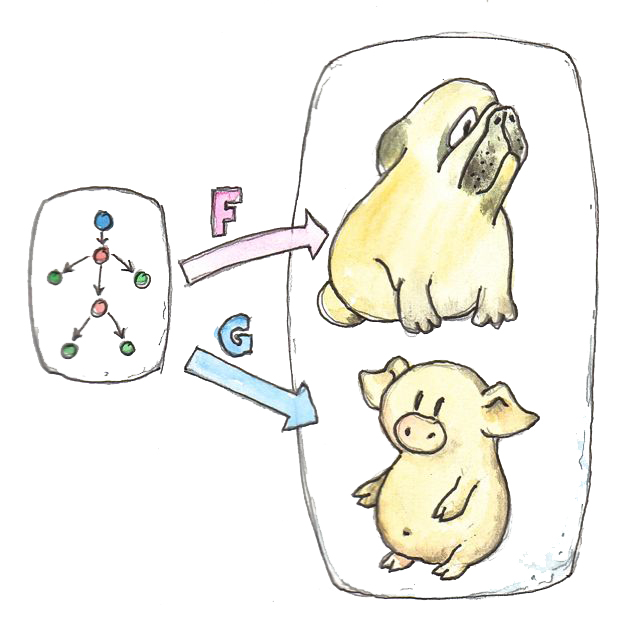
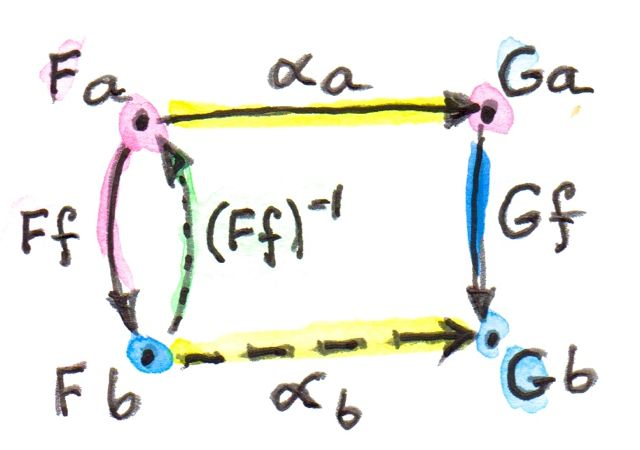
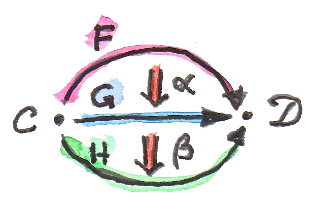
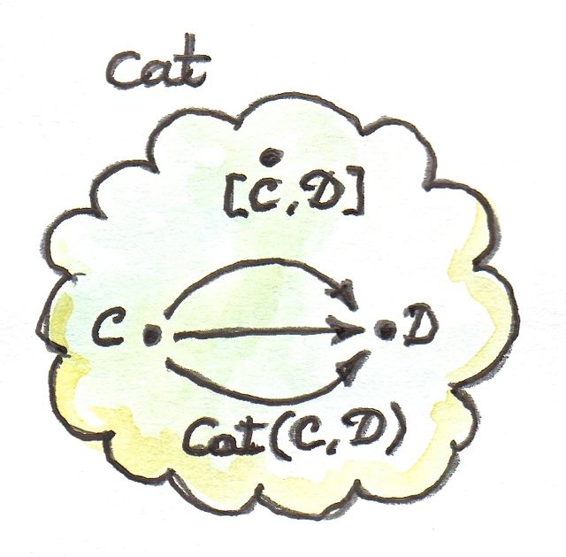

11 Natural Transformation (การแปลงแบบธรรมชาติ) (Sketch)
เราได้พูดเกี่ยวกับfunctorในฐานะการแปรงระหว่างcategoryต่างที่คงไว้ด้วยโครงสร้าง
functorทำการ”ฝัง”categoryหนึ่งในอีกตัวหนึ่ง มันอาจจะรวบสิ่งต่างๆหลายๆอันไปเป็นสิ่งเดียว แต่มันไม่อคยที่จะทำลายการเชื่อมต่อกัน หหหนึ่งในวิธีในการคิดเกี่ยวกับมันคือการที่ว่า ในการมีfunctorเรากำลังขึ้นรูป(model)categoryหนึ่งข้างในอีกอันหนึ่ง categoryเริ่มต้นมีหน้าที่เป็นแม่แบบ(model)สำหรับบางโครงสร้างที่เป็นส่วนหนึ่งของcategoryเป้าหมาย

ได้มีหลายวิธีของการฝังcategoryหนึ่งในอีกอันหนึ่ง ในบางครั้งพวกมันนั้นเท่ากับในบางครั้งพวกมันนั้นก็แตกต่าง เราอาจจะรวบcategoryเริ่มต้นไปเป็นวัตถุเดี่ยว อีกคนอาจจะโยงทุกๆวัตถุไปยังวัตถุที่แต่งกันและทุกๆmorphismไปยังmorphismที่ต่างกัน ในแม่แบบมี่เหมือนกันอาจจะถูกทำให้เป็นจริง(realized)ในหลายๆรูปแบบและวิธี การแปลงแบบธรรมชาติ(Natural transformation)ช่วยเราในการเปรียบเทียบการทำให้เป็นจริงเหล่านี้ พวกมันเป็นการโยงfunctor (การโยงที่พิเศษที่อนุรักษ์ความเป็นfunctorของมัน)
ลองพิจารณาfunctorสองตัว\(F\)และ\(G\)ระหว่างcategory\(\textbf{C}\)และ\(\textbf{D}\)ถ้าคุณให้ความสำคัญกับแต่วัตถุหนึ่ง\(a\)ใน\(\textbf{C}\) มันก็จะถูกโยงไปยังสองสัตถุอย่าง\(Fa\)และ\(Ga\) การโยงของfunctorควรที่จะโยง\(Fa\)ไปยัง\(Ga\)

สังเกตว่า\(Fa\)และ\(Ga\)คือวัตถุในcategory\(\textbf{D}\)เดียวกัน การโยงระหว่างวัตถุในcategoryเดียวกันไม่ควรที่จะขัดกับ(คุณสมบัติของ)categoryนั้น เราไม่ต้องการที่จะสร้างการเชื่อมต่อเทียมระหว่างวัตถุ ดันนั้นมันเป็นธรรมชาติที่จะใช้การเชื่อมต่อที่มีอยู่แล้วนั้นก็คือmorphism การแปลงแบบธรรมชาติคือการเลือกmorphismเหล่านี้ สำหรับทุกๆวัตถุ\(a\)มันเลือกmorphismอันหนึ่งจาก\(Fa\)ไปยัง\(Ga\) ถ้าเราเรียกการแปลงแบบธรรมชาติว่า\(\alpha\) morphismนี้จะถูกเรียกว่าส่วนประกอบ(component)ของ\(\alpha\)ที่\(a\)หรือ\(\alpha_a\)
\[ \alpha_a :: Fa\rightarrow Ga \]
จงจำไว้ว่า\(a\)คือวัตถุใน\(\textbf{C}\)ในขณะที่\(\alpha_a\)คือmorphismใน\(\textbf{D}\)
แน่นอนว่ามันเป็นแค่ส่วนหนึ่งของเรื่องทั้งนั้น เพราะว่าfunctorไม่แต่โยงวัตถุแต่พวกมันยังโยงmorphismด้วย มันกลับเป็นว่าการโยงของmorphismนั้นคงที่ ภายใต้การแปลงแบบธรรมชาติใดๆตามระหว่าง\(F\)และ\(G\) \(Ff\)ต้องถูกแปลงไปเป็น\(Gf\) มากกว่านั้นคือการโยงของmorphismโดยfunctorทั้งสองจำกัดตัวเลือกที่เรามีในการนิยามการแปลงแบบธรรมชาติที่เข้ากันได้กับมัน ลองพิจารณาmorphism\(f\)ระหว่างสองวัตถุ\(a\)และ\(b\)ใน\(\textbf{C}\) มันโยงmorphismทั้งสอง\(Ff\)และ\(Gf\)ใน\(\textbf{D}\)
การแปลงแบบธรรมชาติ\(\alpha\)ให้morphismเพิ่มขึ้นมาที่ทำให้diagramใน\(\textbf{D}\)สมบูรณ์
\[ \begin{aligned} &\alpha_a :: Fa\rightarrow Ga \\ &\alpha_b :: Fb\rightarrow Gb \end{aligned} \]

ในที่นี้เรามีวิธีการสองแบบในการมาจาก\(Fa\)ไปยัง\(Gb\) ในการที่จะทำให้แน่ใจว่าพวกมันนั้นเท่ากัน เราต้องกำหนดเงื่อนไขความเป็นธรรมชาติที่เป็นจริงในทุกๆ\(f\)
\[ Gf\circ\alpha_a = \alpha_b\circ Ff \]
เงื่อนไขความเป็นธรรมชาติความต้องการที่เข้มงวดตัวอย่างเช่นถ้าmorphism\(Ff\)นั้นสามารถที่จะinvertได้ความเป็นธรรมชาติกำหนด\(\alpha_b\)ในแบบของ\(\alpha_a\) มันtransport\(\alpha_a\)เทียบกับ\(f\)
\[ \alpha_b = (Gf)\circ\alpha_a\circ(Ff)^{-1} \]

ถ้ามันมีมากกว่าmorphismที่สามารถinvertได้ระหว่างวัตถุทั้งสองtransportเหล่านี้ต้องตรงกัน แต่โดยทั่วไปmorphismนั้นไม่สามารถทีถูกinvertได้แต่คุณสามารถที่จะเห็นว่าการมีอยู่ของการแปลงแบบธรรมชาติระหว่างสองfunctorนั้นไกลไปกว่าที่จะรับประกัน ดังนั้นความหายากหรือความหลากหลายของfunctorที่มีความสัมพันธ์โดยการแปลงแบบธรรมชาติอาจจะบอกคุณได้มากเกี่ยวกับโครงสร้างของcategoryที่ๆพวกมันทำงานอยู่ เราจะเห็นตัวอย่างของสิ่งนี้ในการที่เราพูดเกี่ยวกับlimitและlemmaของYoneda
ถ้าเรามองการแปลงแบบธรรมชาติในแบบของแต่ละตัวประกอบ เราอาจจะพูดได้ว่ามันโยงวัตถุไปยังmorphism เพราะว่าเงื่อนไขความเป็นธรรมชาติ เราสามารถที่จะพูดได้ว่ามันโยงmorphismไปยังสี่เหลี่ยมของการcommute ได้มีสี่เหลี่ยมของการcommuteที่เป็นธรรมชาติใน\(\textbf{D}\)สำหรับทุกๆmorphismใน\(\textbf{C}\)

คุณสมบัตินี้ของการแปลงแบบธรรมชาตินั้นมีประโยชน์ในหลากหลายการสร้างแบบcategoryที่มักจะประกอบด้วยcommutative diagram ด้วยการเลือกที่รอบคอบของfunctor หลากหลายเงื่อนไขของความcommutativityเหล่านี้อาจจะถูกแปลงไปเป็นเงื่อนไขความเป็นธรรมชาติ เราจะเห็นตัวอย่างของสิ่งเหล่านี้ในตอนที่เราไปยังlimit colimitและadjunction
สุดท้ายแล้วการแปลงแบบธรรมชาติอาจจะถูกใช้ในการนิยามisomorphismของfunctor การบอกว่าfunctorทั้งสองนั้นisomorphicแบบธรรมชาตินั้นแทบจะเหมือนการบอกว่ามันนั้นเท่ากัน isomorphicแบบธรรมชาตินั้นถูกนิยามในฐานะการแปลงแบบธรรมชาติที่ส่วนประกอบทั้งหมดเป็นisomorphism (morphismที่invertได้)
11.1 FunctionแบบPolymorphic
เราได้พูดเกี่ยวกับหน้าที่ของfunctor(หรือโดยเฉพาะendofunctor)ในการเขียนโปรแกรม พวกมันคู่กับconstructorของtypeที่โยงtypeต่างๆไปยังtypeต่างๆ พวกมันก็ยังโยงfunctionต่างๆไปยังfunctionต่างๆและการโยงนี้ถูกเขียนโดยfunctionที่higher orderfmap(หรือtransform,thenและสิ่งที่คล่ายๆกันในC++)
ในการสร้างการแปลงแบบธรรมชาติ เราเริ่มด้วยวัตถุในและนี่คือtypea functorหนึ่งตัวFที่โยงมันไปยังtype\(Fa\) functorอีกตัวหนึ่งGที่โยงไปยัง\(Ga\)ส่วนประกอบของการแปลงแบบธรรมชาติalphaที่aคือfunctionจาก\(Fa\)ไปยัง\(Ga\) ในHaskellเทียม
alpha_a :: F a -> G aการแปลงแบบธรรมชาติคือfunctionแบบpolymorphicที่นิยามสำหรับทุกtypea
alpha :: forall a . F a -> G aforall aนั้นที่ไม่บังคับในHaskell(และในความจริงแล้วมีความจำเป็นที่ต้องเปิดส่วนขยายของภาษานั้นExplicitForAll) โดยทั่วๆไปแล้วคุณอาจจะต้องเขียนมันในรูปแแบบนี้
alpha :: F a -> G aต้องจำไว้ว่ามันคือชุดของfunctionที่parameterizedโดยa นี้คืออีกตัวอย่างหนึ่งของความกระชับของไวยากรณ์ของHaskell ในการสร้างที่คล้ายกันในC++ก็จะมีความเยิ่นเย้อมากกว่า
template<class A> G<A> alpha(F<A>);สิ่งที่แตกต่างอย่างลึกซึ้งระหว่างfunctionแบบpolymorphicของHaskellและfunctioแบบgenericของC++และมันถูกแสดงให้เห็นในแบบที่functionต่างๆเหล่านี้นั้นถูกเขียนและตรวจสอบของtype ในHaskell functionแบบpolymorphicต้องถูกนิยามเหมือนกันหมดสำหรับทุกtype สูตรๆหนึ่งต้องทำงานได้ในทุกๆtype สิ่งนี้สามารถถูกเรียกว่าความเป็นpolymorphicแบบparametric
ในอีกด้านหนึ่งC++ที่รองรับโดยความเป็นpolymorphicเฉพาะกิจที่มีอยู่แล้วที่หมายความว่าtemplteไม่ต้องถูกนิยามแบบสมบูรณ์สำหรับทุกๆtype templateจะสามารถใช้ได้สำหรับtypeที่ให้มาหรือไม่นั้นจะถูกตัดสินใจในเวลาที่ถูกสร้าง ที่typeที่เป็นรูปธรรมนั้นถูกแทนที่สำหรับparameterแบบtype การตรวจสอบtypeนั้นถูกยืดเวลาออกไปที่มักจะนำไปสู่ข้อความerrorที่ไม่สามารถเข้าใจได้อย่างน่าเสียดาย
ในC++ได้มีกลไกสำหรับfunctionในการoverloadingและการทำให้templateเป็นเฉพาะเจาะจงที่อนุญาติในมีนิยามที่แตกต่างกันของfunctionเดียวกันสำหรับtypeที่แตกต่างกัน ในHaskellความเป็นfunctionนี้นั้นให้โดยtype classsesและtype families
ความเป็นpolymorphicแบบparametricของHaskellมีผลที่ตามมาที่คาดไม่ถึงนั้นค่อในทุกๆfunctionแบบpolymorphicของtypeอย่าง
alpha :: F a -> G aที่ที่FและGนั้นคือfunctorได้บรรลุเงื่อนไขของความเป็นธรรมชาติ ในที่นี้มันคือในรูปแบบทางcategory(ที่\(f\)คือfunction\(f::a\rightarrow b\))
\[ Gf\circ\alpha_a = \alpha_b\circ Ff \]
ในHaskell การกระทำของfunctorGบนmorphismfนั้นถูกเขียนโดยfmapผมจะเขียนมันในHaskell-เทียมที่มีtype annotationsอย่าง
fmap_G f . alpha_a = alpha_b . fmap_F fเพราะว่าการอนุมานของtype annotationsนั้นไม่จำเป็นและสมการเหล่านี้ถูกต้อง
fmap f . alpha = alpha . fmap fนี่ยังไม่ใช่Haskellจริงๆ(ความเท่ากันของfunctionไม่สามารถถูกเขียนในโค้ด)แต่มันคือความเท่ากันที่สามารถถูกใช้โดยโปรแกรมเมอร์ในการให้เหตุผลทางสมการ หรือใช้โดยcomplierในการเพิ่มประสิทธิภาพ
เหตุผลที่ว่าทำไมเงื่อนไขของความเป็นธรรมชาติที่เป็นอัตโนมัติในHaskellนั้นต้องมากับ”การได้ทฤษฎีบทโดยไม่ต้องทำอะไร” ความเป็นpolymorphicแบบparametricที่ถูกใช้ในการนิยามการแปลงแบบธรรมชาติในHaskell ได้กำหนดให้มีขีดจำกัดที่แข็งแรงบนบนการเขียน(หนึ่งสูตรสำหรับtypeทุกประเภท) ความจำกัดเหล่านี้แปรไปยังทฤษฎีบทของความเท่ากันเกี่ยวกับfunctionแบบนี้ ในกรณีของfunctionที่แปลงfunctorต่างๆ ทฤษฎีบทที่ได้มาโดยไม่ต้องทำอะไรนั้นคือเงื่อนไขของความเป็นธรรมชาติ1
หนึ่งในวิธีการคิดเกี่ยวกับfunctorในHaskellที่ผมกล่าวถึงก่อนหน้านี้ในการพิจารณาพวกมันเป็นcontainerแบบทั่วไป เราสามารถที่จะทำการเปรียบเทียบอย่างนี้ต่อและลองพิจารณาการแปลงแบบธรรมชาติที่จะเป็นวิธีการสำหหรับการบรรจุช้ำของสิ่งที่อยู่ข้างในของcontainerหนึ่งไปยังอีกcontainerหนึ่ง
เงื่อนไขทางธรรมชาติกลายมาเป็นสมากรที่ว่ามันไม่จำเป็นสำคัญว่าเราจะแปรสิ่งที่อยู่ภายในก่อนหรือผ่านการใช้งานของfmapและการบรรจุช้ำหลังจากนี้ หรือบรรจุช้ำก่อนและทำการเปลี่ยนแปลงสิ่งที่อยู่ข้างในcontainerใหม่ด้วยfmapที่ถูดเขียนของมันเอง สองการกระทำแบบนี้ ในการบรรจุช้ำและการfmapนั้นorthogonalกัน(ไม่มีความเกี่ยวข้องกัน) “หนึ่งในนั้นขยับใข่ อีกตัวทำการต้มมัน” (One moves the eggs, the other boils them)
เรามาดูตัวอย่างต่างๆของการแปลงแบบธรรมชาติในHaskell สิ่งแรกคือระหว่างfunctorของlistและfunctorMaybe มันreturnกลับมาเป็นหัวของlistแต่แค่ว่าlistนั้นไม่ได้ว่าง
safeHead :: [a] -> Maybe a
safeHead [] = Nothing
safeHead (x:xs) = Just xมันคือfunctionที่polymorphicในa มันใช้ได้สำหรับtypeใดๆก็ตามของaที่ไม่มีข้อจำกัด ดันนั้นมันคือตัวอย่างของpolymorphismแบบparametric ดันนั้นมันคือการแปลงแบบธรรมชาติระหว่างfunctorทั้งสอง แต่คือที่จะทำให้เราเชื่อมั่น เรามาพิสูจน์ความเป็นเงื่อนไขของความเป็นธรรมชาติ
fmap f . safeHead = safeHead . fmap fเรามีอยู่สองกรณีในการพิจารณาlistว่าง
fmap f (safeHead []) = fmap f Nothing = NothingsafeHead (fmap f []) = safeHead [] = Nothingและlistที่ไม่ว่าง
fmap f (safeHead (x:xs)) = fmap f (Just x) = Just (f x)safeHead (fmap f (x:xs)) = safeHead (f x : fmap f xs) = Just (f x)ผมได้ใช้การเขียนfmapสำหรับlistต่างๆเหล่านี้
fmap f [] = []
fmap f (x:xs) = f x : fmap f xsและสำหรับMaybe
fmap f Nothing = Nothing
fmap f (Just x) = Just (f x)กรณีที่น่าสนใจคือในตอนที่หนึ่งในfunctorคือfunctorConstแบบตรงไปตรงมาการแปลงแบบธรรมชาติจากหรือมาจากfunctorConstดูเหมือนแค่fnctionที่เป็นpolymorphicในtypeของการreturnหรือtypeของargumentของมัน
ตัวอย่างเช่นlengthสามารถถูกคิดในฐานะแปลงแบบธรรมชาติสำหรับfunctorของlistคือConst Intfunctorอย่างๆ
length :: [a] -> Const Int a
length [] = Const 0
length (x:xs) = Const (1 + unConst (length xs))ในที่นี้unConstถูกใช้ในการดึงconstructorของConst
unConst :: Const c a -> c
unConst (Const x) = xแน่นอนว่าในทางปฏิบัติlengthถูกนิยามว่า
length :: [a] -> Intที่ช่อนได้อย่างมีประสิทธิภาพความจริงที่ว่ามันคือแปลงแบบธรรมชาติ
การหาfunctionที่polymorphicแบบparametricจากfunctorConstนั้นอาจจะยากกว่านิดหนึ่ง เนื่อว่ามันอาจจะจำเป็นต้องมีการสร้างของค่าจากไม่มีอะไรเลยสิ่งที่เราสามารถทำได้คือ
scam :: Const Int a -> Maybe a
scam (Const x) = Nothingfunctorที่มีความทั่วไปอีกอย่างหนึ่งที่เราได้เห็นแล้วและที่จะมีบทบาทในlemmaของYonedaคือfunctorReaderที่ผมจะเขียนนิยามของมันใหม่ในฐานะnewtypeว่า
newtype Reader e a = Reader (e -> a)มันถูกparameterizedโดยสองtypeแต่มีความเป็นfunctor(แบบcovariant)แค่ในตัวที่สอง
instance Functor (Reader e) where
fmap f (Reader g) = Reader (\x -> f (g x))ในทุกๆtypeeคุณสามารถที่จะนิยามชุดของการแปลงแบบธรรมชาติจากReader eไปยังfunctionfอื่น เราจะเห็นหลังจากนี้ว่าสมาชิกของชุดนี้นั้น ตรงแบบหนึ่งต่อหนึ่งกับสมาชิกของf e(lemmaของYoneda)
ตัวอย่างเช่นลองพิจารณาunit typeค่อนข้างทั่วๆไป()กับสมาชิกเดี่ยว() functorReader () นั้นนำtypeaใดๆก็ตามและโยงมันไปยังtypeแบบfunction() -> aสิ่งนี้คือแค่functionที่เลือกสมาชิกหนึ่งในaมา แล้วมาลองพิจารณาการแปลงแบบธรรมชาติจากfunctorนี้ไปยังMaybefunctor
alpha :: Reader () a -> Maybe aได้มีแค่สองตัวอย่างdumbและobvious
dumb (Reader _) = Nothingและ
obvious (Reader g) = Just (g ())(สิ่งที่คุณสามารถทำได้กับgคือการใช้มันกับค่าunit())
และแน่นอนว่าในการคาดเดาของlemmaของYoneda สิ่งเหล่านี้คู่กับสมาชิกทั้งสองของtypeMaybe () ที่คือNothingและJust () เราจะกลับมาที่lemmaของYonedaหลังจากนี้ นี่เป็นแค่น้ำจิ้ม
11.2 ข้ามพ้นความเป็นธรรมชาติ
Functionแบบpolymorphicและparametricallyระหว่างfunctorทั้งสอง(รวมไปถึงกรณีที่สุดโต่งของfunctorConst)นั้นจะเป็นการแปลงแบบธรรมชาติเสมอ เนื่องด้วยtypeแบบข้อมูลแบบพีชคณิตและมาตรฐานนั้นคือfunctor functionแบบpolymorphicระหว่างtypeแบบนี้คือการแปลงแบบธรรมชาติ
เราก็มีtypeแบบfunctionที่อยู่กับเราและสิ่งเหล่านี้นั้นมีความเป็นfunctorในtypeของการreturnของมัน เราสามารถใช้มันในการสร้างfunctorต่างๆ(เหมือนกับfunctorReader)และนิยามการแปลงแบบธรรมชาติที่เป็นfunctionแบบhigher-order
แต่ว่าtypeแบบfunctionนั้นไม่เป็นcovariantในtypeของargument พวกมันเป็นแบบcontravariant แน่นอนว่าfunctorแบบcontravariantนั้นเท่ากันกับfunctorแบบcovariantจากcategoryตรงข้าม functionแบบpolymorphicระหว่างfunctorแบบcontravariantนั้นยังคือการแปลงแบบธรรมชาติในความหมายทางcategory ยกเว้นว่าพวกมันทำงานบนfunctorจากcategoryตรงข้ามไปยังtypeของHaskell
คุณอาจจะจำได้ว่าตัวอย่างของfunctorแบบcontravariantที่เราได้ดูมาก่อนหน้านี้ว่า
newtype Op r a = Op (a -> r)functorนี้นั้นเป็นแบบcontravariantในa
instance Contravariant (Op r) where
contramap f (Op g) = Op (g . f)เราสามารถที่จะเขียนfunctionแบบpolymorphicจากอย่างOp Book ไปยัง Op Stringว่า
predToStr (Op f) = Op (\x -> if f x then "T" else "F")แต่เนื่องด้วยfunctorทั้งสองนั้นไม่เป็นcovariantนี้ไม่ใช่การแปลงแบบธรรมชาติใน\(\textbf{Hask}\)แต่เพราะว่าพวกมันนั้นเป็นcontravariantทั้งคู่ พวกมันบรรลุเงื่อนไขของความเป็นธรรมชาติแบบ”ตรงข้าม”
contramap f . predToStr = predToStr . contramap fสังเกตว่าfunctionfต้องไปยังทิศทางตรงข้ามของสิ่งที่เราได้ใช้กับfmapเพราะว่าsigntureของcontramap
contramap :: (b -> a) -> (Op Bool a -> Op Bool b)แล้วได้มีconstructorของtypeแบบไหนที่ไม่ใช่functorไม่ว่าจะเป็นcovariantหรือr contravariant? นี้คือตัวอย่างหนึ่ง
a -> aสิ่งนี้ไม่ใช่functorเพราะว่าtypeaเดียวกันถูกใช้ทั้งในตำแหน่งด้านลบ(contravariant)และด้านบวก(covariant)ดังนั้นfunctionที่มีsignatureแบบนี้
(a -> a) -> f aที่fคือfunctorใดๆก็ตามไม่สามารถที่จะเป็นการแปลงแบบธรรมชาติ น่าสนใจที่ว่าได้มีการgeneralize(generalization)ของการแปลงแบบธรรมชาติถูกเรียกว่าการแปลงแบบธรรมชาติคู่(dinatural transformations)ที่จะทำงานกับกรณีต่างๆแบบนี้ เราจะมาดูสิ่นแบบนี้ในตอนที่เราพูดเกี่่ยวกับends
11.3 CategoryของFunctor
ในที่นี้เรามีการโยงระหว่างfunctorต่าง(นั้นก็คือการแปลงแบบธรรมชาติ)มันเป็นธรรมชาติในการถามคำถามว่าfuntorสามารถก่อให้เกิดcategoryได้หรือเปล่า และแน่นอนว่ามันทำได้ ได้มีcategoryของfunctorหนึ่งสำหรับแต่ละคู่ของcategories\(\textbf{C}\)และ\(\textbf{D}\) วัตถุในcategoryนี้คือfunctorจาก\(\textbf{C}\)ไปยัง\(\textbf{D}\)และmorphismคือการแปลงแบบธรรมชาติ
เราต้องที่จะนิยามการประกอบกันของการแปลงแบบธรรมชาติทั้งสองแต่นั้นมันค่อนข้างง่ายห ส่วนประกอบของการแปลงแบบธรรมชาติคือmorphismและเรารู้วิธีการประกอบmorphisms
แน่นอนว่าเรามาคุยเกี่ยวกับการแปลงแบบธรรมชาติ\(\alpha\)จากfunctor\(F\)ไปยัง\(G\) ส่วนประกอบของมันที่วัตถุ\(a\)ในบางmorphism
\[ \alpha_a::Fa\rightarrow Ga \]
เราต้องการที่จะประกอบ\(\alpha\)ด้วย\(\beta\)ที่คือการแปลงแบบธรรมชาติจากfunctor\(G\)ไปยัง\(H\)ส่วนประกอบของ\(\beta\)ที่\(a\)คือmorphism
\[ \beta_a :: Ga\rightarrow Ha \]
Morphismเหล่านี้นั้นประกอบได้และการประกอบของมันคือmorphismอีกอันหนึ่ง
\[ \beta_a\circ\alpha_a :: Fa\rightarrow Ha \]
เราจะใช้morphismนี้ในฐานะส่วนประกอบของการแปลงแบบธรรมชาติ\(\beta\cdot\alpha\)คือการประกอบกันของการแปลงแบบธรรมชาติทั้งของ\(\beta\)หลัง\(\alpha\)
\[ (\beta\cdot\alpha)_a = \beta_a\circ\alpha_a \]

การจ้อง(ที่นาน)ไปยังdiagramได้ทำให้เรามั่นใจว่าผลของการประกอบนี้คือการแปลงแบบธรรมชาติจาก\(F\)ไปยัง\(H\)
\[ Hf\circ(\beta\cdot\alpha)_a = (\beta\cdot\alpha)_b\circ Ff \]

การประกอบกันของการแปลงแบบธรรมชาติต่างๆนั้นมีคุณสมบัติการเปลี่ยนหมู่เพราะว่าการประกอบกันของพวกมันที่ก็คือmorphismทั่วๆไปนั้นมีคุณสมบัติการเปลี่ยนหมู่ในส่วนของการประกอบกันของพวกมัน
สุดท้ายแล้วสำหรับfunctor\(F\)ได้มีการแปลงแบบธรรมชาติที่เป็นidentity\(1_F\)ที่ส่วนประกอบของมันคือmorphismแบบidentity
\[ \operatorname{id}_{Fa}::Fa\rightarrow Fa \]
แน่นอนว่าดังนั้นfunctorsที่สร้างเป็นcategory
ในบางคำเกี่ยวกับสัญกรณ์ ตามมาจากSaunders Mac Laneผมได้ใช้จุดสำหรับประเภทของการประกอบของการแปลงแบบธรรมชาติที่ผมได้อธิบายไปก่อนหน้านี้ ปัญหาคือว่าได้มีสองวิธีในการประกอบชองการแปลงแบบธรรมชาติที่นี้เรียกว่าการประกอบกันในแนวตั้งเพราะว่าfunctorนั้นมักจัช้อนกันในdiagramที่ทำการอธิบายมัน การประกอบกันในแนวตั้งนั้นมีความสำคัญในการนิยามcategoryของfunctor ผมจะอธิบายการประกอบกันในแนวนอนในอีกไม่ช้า

categoryของfunctorระหว่างcategory \(\textbf{C}\)และ\(\textbf{D}\)นั้นถูกเขียนไว้ว่า\(\textbf{Fun}(\textbf{C}, \textbf{D})\)หรือ\([\textbf{C},\textbf{D}]\)หรือในบางครั้งในฐานะ\(\textbf{D}^\textbf{C}\) ในการเขียนอย่างสุดท้ายบอกเราว่าcategoryของfunctorตัวมันเองอาจจะถูกมองเป็นวัตถุแบบfunction(ก็คือexponential)ในอีกcategoryหนึ่ง นี้เป็นจริงหรือเปล่า
เรามาดูที่ลำดับชั้นของความabstractionที่เราได้สร้างมาจนถึงจุดนี้ เราเรื่มจากcategoryที่คือกลุ่มของวัตถุและmorphism categoryมันเอง(หรือถ้าให้พูดอย่างถูกต้อง categoryขนาดเล็กที่วัตถุก่อเป็นset)นั้นพวกมันเองเป็นวัตถุในcategoryที่สูงกว่า\(\textbf{Cat}\) moprhismsในcategoryนั้นคือfunctor hom-setใน\(\textbf{Cat}\)คือsetของfunctor ตัวอย่างเช่น\(\textbf{Cat}(\textbf{C}, \textbf{D})\)คือsetของfunctorระหว่างcategoryสองตัวอย่าง\(\textbf{C}\)และ\(\textbf{D}\)

cateogryของfunctor\([\textbf{C},\textbf{D}]\)นั้นก็เป็นsetของfunctorระหว่างcategoryทั้งสอง(บวกกับการแปลงแบบธรรมชาติในฐานะmorphism) วัคถุต่างๆของมันนั้นเหมือนกับสมาชิกของ\(\textbf{Cat}(\textbf{C},\textbf{D})\) มากไปกว่านี้นcategoryของfunctorในการที่เป็นcategoryต้องเป็นวัตถุของ\(\textbf{Cat}\) (ดังนั้นมันเป็นว่าcategoryของfunctorระหว่างcategoryขนาดเล็กสองตัวก็มีขนาดเล็กเอง) เรามีความสัมพันธ์ระหว่างHom-setในcategoryและวัตถุในcategoryเดียวกัน สถานการณ์นี้นั้นเหมือนกับวัคถุexpoenentialที่เราได้เห็นได้เห็นในส่วนก่อนหน้า เรามาดูในวิธีการที่เราสร้างมันใน\(\textbf{Cat}\)
ในที่คุณอาจจะจำได้ในการที่จะสร้างexponential เราต้องการที่จะนิยามproduct ใน\(\textbf{Cat}\)สิ่งนี้กลายมาเป็นสิ่งที่ค่อนข้างง่ายเพราะว่าcategoryขนาดเล็กเป็นsetของวัตถุและเรารู้วิธีการในการนิยามproductแบบCartesianของset ดังนั้นวัตถุในcategoryแบบproduct\(\textbf{C}\times\textbf{D}\)คือแค่คู่ของวัตถุ\((c,d)\)ตัวหนึ่งมาจาก\(\textbf{C}\)และอีกตัวมาจาก\(\textbf{D}\) ในทางเดียวกันmorphismระหว่างสองคู่\((c,d)\)และ\((c',d')\)มันคือคู่ของmorphism\((f,g)\)ที่\(f::c\rightarrow c'\)และ\(g::d\rightarrow d'\)คู่เหล่านี้ของmorphismประกอบกันในแต่ละส่วนประกอบ และมันก็จะมีคู่ที่เป็นidentityที่ก็คือคู่ของmorphismแบบidentity โดยสรุปแล้ว\(\textbf{Cat}\)คือcategoryแบบCartesian closedอย่างเต็มที่ที่ที่ได้มีวัตถุexponential\(\textbf{D}^\textbf{C}\)ในทุกๆคู่ของcategory และโดย”วัตถุ“ใน\(\textbf{Cat}\)ผมหมายถึงcategoryดังนั้น\(\textbf{D}^\textbf{C}\)คือcategoryที่ที่เราสามารถเห็นได้เป็นcategoryของfunctorระหว่าง\(\textbf{C}\)และ\(\textbf{D}\)
11.4 2-Category
โดยที่ทำสิ่งนั้น(categoryของfunctorในฐานะexponential)เรามาดูอย่างใกล้ๆที่\(\textbf{Cat}\) โดยนิยามแล้วHom-setใดๆก็ตามใน\(\textbf{Cat}\)คือsetของfunctor แต่ในสิ่งที่เราได้เห็นก่อนหน้านี้functorระหว่างสองวัตถุมีโครงสร้างที่หรูหรากว่าแค่set พวมมันก่อให้เกิดcategoryที่คู่กับการแปลงแบบธรรมชาติที่กระทำกับในฐานะmorphism เนื่องด้วยว่าfunctorนั้นถูกพิจารณาเป็นmorphismใน\(\textbf{Cat}\)การแปลงแบบธรรมชาติจึงเป็นmorphismระหว่างmorphism
โครงสร้างที่หรูหรากว่านี้คือตัวอย่างของ2-categoryที่เป็นการgeneralizeของcategoryที่นอกเหนือจากวัตถุและmorphism(ที่อาจจะถูกเรียกว่า1-morphismในบริบทนี้) ได้มี2-morphismด้วยที่คือmorphismระหว่างmorphism
ในกรณีนี้ของ\(\textbf{Cat}\)ที่มองในฐานะ2-categoryเรามี
- วัตถุ: category(ขนาดเล็ก)
- 1-morphism: functorระหว่างcategory
- 2-morphism: การแปลงแบบธรรมชาติระหว่างfunctor

แทนที่Hom-setระหว่างcategoryทั้งสอง\(\textbf{C}\)และ\(\textbf{D}\)เรามีhom-categoryนั้นก็คือcategoryของfunctor\(\textbf{D}^\textbf{C}\)เราได้มีการประกอบfunctorแบบทั่วไปคือfunctor\(F\)จาก\(\textbf{D}^\textbf{C}\)ประกอบกับfunctor\(G\)จาก\(\textbf{E}^\textbf{D}\)เพิ่อที่จะได้\(G\circ F\)จาก\(\textbf{E}^\textbf{C}\) แต่เราก็มีการประกอบกับข้างในของแต่ละHom-categoryคือการประกอบแนวตั้งของการแปลงแบบธรรมชาติหรือ2-morphismระหว่างfunctor
ด้วยการที่มีสองประเภทของการประกอบกันใน2-categoryเราก็จะมีคำถาม แล้วพวกมันมีปฏิสัมพันธ์อย่างไร
เรามาเลือกสองfunctorหรือ1-morphismใน\(\textbf{Cat}\)
\[ \begin{gather*} F :: \textbf{C} \to \textbf{D} \\ G :: \textbf{D} \to \textbf{E} \end{gather*} \]
และการประกอบของมัน
\[ G\circ F::\textbf{C}\rightarrow \textbf{E} \]
สมมุติว่าเรามีการแปลงแบบธรรมชาติ\(\alpha\)และ\(\beta\)ที่กระทำ ตามลำดับบนfunctor\(F\)และ\(G\)
\[ \begin{gather*} \alpha :: F \to F' \\ \beta :: G \to G' \end{gather*} \]

สังเกตว่าเราไม่สามารถใช้การประกอบกันแบบแนวต้งของคู่ๆนี้เพราะว่าเป้าหมายของ\(\alpha\)นั้นแตกต่างจากจุดเรื่อมต้นของ\(\beta\) ในความจริงแล้วพวกกันคือสมาชิกของcategoryของfunctorที่แตกต่างกันอย่าง\(\textbf{D}^\textbf{C}\)และ\(\textbf{E}^\textbf{D}\) แต่เราสามารถที่จะใช้การประกอบกันของfunctor \(F'\)และ\(G'\)เพราะว่าเป้าหมายของ\(F'\)นั้นคือที่เริ่มต้นของ\(G'\) มันคือcategory\(\textbf{D}\) อะไรคือความสัมพันธ์ระหว่างfunctor \(G'\circ F'\)และ\(G\circ F\)
การที่เรามี\(\alpha\)และ\(\beta\)อยู่พร้อม เราสามารถที่จะนิยามการแปลงแบบธรรมชาติจาก\(G'\circ F'\)ไปยัง\(G\circ F\)? ให้ผมได้ร่างการสร้างนี้
เหมือนโดยทั่วไปเราเริ่มจากวัตถุ\(a\)ใน\(\textbf{C}\) ที่imageของมันแยกออกไปเป็นสองวัตถุใน\(\textbf{D}\)คือ\(Fa'\)และ\(F'a\) ก็มีmorphismที่เป็นส่วนประกอบของ\(\alpha\)ในการเชื่อมระหว่างวัตถุทั้งสองอย่าง
\[ \alpha_a :: Fa\rightarrow F'a \]
เราไปจาก\(\textbf{D}\)ไปยัง\(\textbf{E}\)วัตถุเหล่านี้แยกไปต่อไปเป็นสี่วัตถุอย่าง \(G (F a)\), \(G'(F a)\), \(G (F'a)\), \(G'(F'a)\) เราก็มีmorphismสี่ตัวที่ก่อเป็นสี่เหลี่ยม สองmorphismจากทั้งหมดคือส่วนประกอบของการแปลงแบบธรรมชาติ\(\beta\)
\[ \begin{gather*} \beta_{F a} :: G (F a) \to G'(F a) \\ \beta_{F'a} :: G (F'a) \to G'(F'a) \end{gather*} \]
อีกสองตัวคือimageของ\(\alpha_a\)ภายใต้functorทั้งสอง(functorจะทำการโยงmorphismต่างๆ)
\[ \begin{gather*} G \alpha_a :: G (F a) \to G (F'a) \\ G'\alpha_a :: G'(F a) \to G'(F'a) \end{gather*} \]
นั้นก็มีmorphismหลายตัว เป้าหมายของเราคือการหาmorphismที่ไปจาก\(G(Fa)\)ไปยัง\(G'(F'a)\)ส่วนประกอบที่มีคุณสมปัติสำหรับการแปลงแบบธรรมชาติที่เชื่อมสองfunctor\(G \circ F\) ไปยัง\(G' \circ F'\) ในความเป็นจริงแล้วได้มีไม่เฉพาะแค่หนึ่งแต่เป็นสองเส้นทางที่เราสามารถใช้จาก\(G(Fa)\)ไปยัง\(G'(F'a)\)
\[ \begin{gather*} G'\alpha_a \circ \beta_{F a} \\ \beta_{F'a} \circ G \alpha_a \end{gather*} \]
โชกดีของเราว่าพวกมันเท่ากันเพราะว่าสี่เหลี่ยมที่เราได้สร้างกลับเป็นสี่เหลี่ยมที่เป็นธรรมชาติของ\(\beta\)
เราได้นิยามส่วนประกอบของการแปลงแบบธรรมชาติจาก\(G \circ F\) ไปยัง\(G' \circ F'\) การพิสูจน์ของความเป็นธรรมชาติของการแปลงนี้นั้นค่อนข้างตรงไปตรงมา ถ้าคุณมีความอดทนมากพอ
เราเรียกการแปลงแบบธรรมชาตินี้ว่าการประกอบกันแนวนอนของ\(\alpha\)และ\(\beta\)
\[ \beta\circ\alpha :: G\circ F\rightarrow G'\circ F' \]
อีกครั้งตามมาจากMac Laneผมได้ใช้วงกลมเล็กสำหรับการประกอบกันในแนวนอนถึงแม้คุณอาจจะเจอการใช้ดาวแทนที่
ในที่นี้หลักการง่ายๆทางcategpryคือในทุกๆครั้งที่คุณมีการประกอบกันตุณควรที่จะตามหาcategory เราได้มีการประกอบกันในแนวตั้งของการแปลงแบบธรรมชาติและมันเป็นส่วนของcategoryของfunctor แล้วการกอบกันในแนวนอนละ? มันอยู่ในcategoryอะไร?
ในการที่จะตามหานี้คือการมอง\(\textbf{Cat}\)ในด้านข้าง มองที่การแปลงแบบธรรมชาติไม่ในฐานะลูกศรระหว่างfunctorแต่เป็นลูกศรระหว่างcategory การแปลงแบบธรรมชาติที่นีั่งระหว่างcategoryทั้งสอง ที่ที่ได้ถูกเชื่อมโดยfunctorที่มันทำการเปลี่ยนแปลง เราสามารถที่จะคิดถึงมันในฐานะการเชื่อมต่อกันของcategoryทั้งสอง

เรามาให้ความสนใจกับวัตถุทั้งสองของ\(\textbf{Cat}\)นั้นก็คือcategory\(\textbf{C}\)และ\(\textbf{D}\) ได้มีsetของการแปลงแบบธรรมชาติที่ไประหว่างfunctorที่เชื่อมจาก\(\textbf{C}\)ไปยัง\(\textbf{D}\) การแปลงแบบธรรมชาติเหล่านี้คือลูกศรใหม่จาก\(\textbf{C}\)ไปยัง\(\textbf{D}\) ในรูปแบบเดียวกันได้มีการแปลงแบบธรรมชาติระหว่างfunctorที่เชื่อมต่อ\(\textbf{D}\)ไปยัง\(\textbf{E}\)ที่เราสามารถมองมันในฐานะลูกศรใหม่จาก\(\textbf{D}\)ไปยัง\(\textbf{E}\) การประกอบแนวนอนกันคือการประกอบกันของลูกศรเหล่านี้
เราก็มีลูกศรแบบidentityที่จาก\(\textbf{C}\)ไปยัง\(\textbf{C}\) มันคือการแปลงแบบธรรมชาติแบบidentityที่โยงfunctorแบบidentityบน\(\textbf{C}\)ไปยังตัวมันเอง สังเกตว่าidentityสำหรับการประกอบแนวนอนก็เป็นidentityสำหรับการประกอบแนวตั้งไม่เป็นในอีกทางหนึ่ง
สุดท้ายแล้วการประกอบกันทั้งสองอยู่ในกฎของการแลกเปลี่ยน
\[ (\beta'\cdot\alpha')\circ(\beta\cdot\alpha) = (\beta'\circ\beta)\cdot(\alpha'\circ\alpha) \]
ผมจะอ้างคำของSaunders Mac Laneในที่นี้ว่า นักอ่านในที่นี้อาจจะชอบในการเขียนdiagramที่ชัดเจนในความจำเป็นในการพิสูจน์ความจริงข้อนี้
ได้มีเครื่องหมายอีกตัวหนึ่งที่อาจจะมีประโยชน์ในอนาคต ในการตีความแบบด้านข้างของ\(\textbf{Cat}\)ได้มีสองวิธีในการมาจากวัตถุไปยังวัตถุในการใช้functorหรือการใช้การแปลงแบบธรรมชาติ แต่เราสามารถที่จะตีความใหม่ชองลูกศรfunctorในฐานะการแปลงแบบธรรมชาติแบบพิเศษคือการแปลงแบบธรรมชาติที่เป็นidentityที่กระทำบนfunctorนี้ ดังนั้นคุณจะเห็นในบ่อยครั้งเครื่องหมายแบบนี้
\[ F\circ\alpha \]
ที่\(F\)คือfunctorจาก\(\textbf{D}\)ไปยัง\(\textbf{E}\)และ\(\lalpha\)คือการแปลงแบบธรรมชาติระหว่างสองfunctorจาก\(\textbf{C}\)ไปยัง\(\textbf{D}\) เนื่องว่าคุณไม่สามารถที่จะประกอบfunctorกับการแปลงแบบธรรมชาติ สิ่งนี้ถูกตีความในฐานะการประกอบแนวนอนของการแปลงแบบธรรมชาติแบบidentity\(1_F\)หลัง\(\alpha\)
ในทางเดียวกัน
\[ \alpha\circ F \]
คือการประกอบแนวนอนของ\(\alpha\)หลัง\(1_F\)
11.5 สรุป
บทนี้คือจุดสิ้นสุดของส่วนแรกของหนังสือเล่มนี้ เราได้เรียนคำศัพท์พื้นฐานของทฤษฎีcategory คุณอาจจะคิดถึงวัตถุและcategoryในฐานะคำนาม และmorphism functorและการแปลงแบบธรรมชาติในฐานะคำกริยา morphismที่เชื่อมต่อวัตถุ functorเชื่อมต่อcategoryและการแปลงแบบธรรมชาติเชื่อมต่อfunctor
แต่เราก็ได้เห็นแล้วว่าสิ่งที่ดูเหมือนการกระทำในระดับหนึ่งของการทำให้เป็นนามธรรม(abstraction)กลายมาเป็นวัตถุใรอีกระดับหนึ่ง setของmorphismกลายมาเป็นวัตถุประเภทfunction ในฐานะวัตถุ มันสามารถที่จะเป็นจุดเริ่มต้นหรือเป้าหมายของmorphismอีกอัน นั้นก็คือแนวคิดข้าหลังfunctionแบบhigher order
functorนั้นโยงวัตถุไปยังวัตถุ ดังนั้นเราสามารถที่จะใช้มันในฐานะconstructorของtypeหรือtypeแบบparametric functorนั้นก็โยงmorphismต่างๆดังนั้นมันคือfunctionแบบhigher order(fmap) ได้มีfunctorเรียบง่ายบางตัวอย่างConst productหรือcoproductที่สามารถถูกใช้ในการสร้างtypeข้อมูลแบบพีชคณิตที่หลากหลายมากมาย typeแบบfunctionนั้นก็มีความเป็นfunctorทั้งแบบcovariantและcontravariantและสามารถถูกใช้ในการขยายtypeข้อมูลแบบพีชคณิต
functorอาจจะถูกมองในฐานะวัตถุในcategoryของfunctor ในแบบนั้นแล้วพวกมันกลายมาเป็นจุดเริ่มต้นและเป้าหมายของmorphismนั้นก็คือการแปลงแบบธรรมชาติ การแปลงแบบธรรมชาติคือประเภทพิเศษของfunctionแบบpolymorphic
11.6 โจทย์ท้าทาย
- ลองนิยามการแปลงแบบธรรมชาติจากfunctor
Maybeไปยังfunctorของlistและพิสูจน์เงื่อนไขความเป็นธรรมชาติสำหรับมัน - นิยามอยางน้อยแปลงแบบธรรมชาติที่ไม่เหมือนกันระหว่าง
Reader ()และfunctorของlist แล้วได้มีlistmที่ไม่เหมือนกันของ()และสิ่งต่างๆนี้ - ต่อเนื่องจากข้อที่แล้วลองทำกับ
Reader BoolและMaybe - ลองแสดงว่าการประกอบแนวนอนของการแปลงแบบธรรมชาติได้ตามเงื่อนไขความเป็นธรรมชาติ(คำใบ้:ลองใช้ส่วนประกอบต่างๆ)มันคือฝึกฝนที่ดีของการไล่diagram(diagram chasing)
- ลองเขียนเรียงความขนาดสั้นเกี่ยวกับการที่คุณอาจจะสนุกกับการเขียนdiagramออกมาในความจำเป็นในการพิสูจน์กฏของการสลับ
- ลองสร้างกรณีทดสอบสำหรับเงื่อนไขความเป็นธรรมชาติระหว่างfunctor
Opต่างๆกัน นี้คือตัวเลือกหนึ่ง
op :: Op Bool Int
op = Op (\x -> x > 0)และ
f :: String -> Int
f x = read xคุณสามารถที่จะอ่านต่อเกี่ยวกับทฤษฎีบทที่ได้มาโดยไม่ต้องทำอะไรในblogของผม”ความเป็นparametric: เงินไม่สำหรับอะไรเลยและทฤษฎีบทที่ได้มาโดยไม่ต้องทำอะไร” (Parametricity: Money for Nothing and Theorems for Free)↩︎